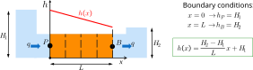
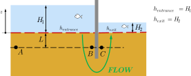
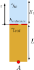
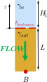
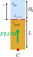
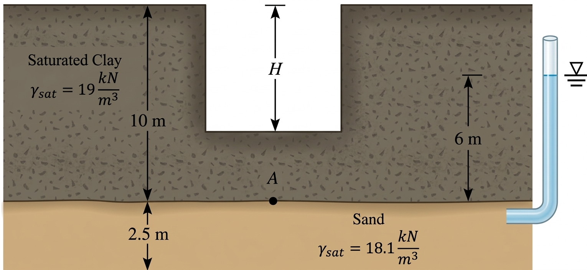

Recap
- We learned how to calculate total head and hydraulic gradient in soils.
- We learned to calculate 1D seepage.
- We learned how to calculate the permeability of uniforms and layered soils.
Contents
- Mass balance and Laplace equation.
- Intro to flow nets.
- Seepage erosion and piping
- Solutions if erosion is a potential problem.
Objectives covered in this lecture
- [O2]: Develop an understanding of the importance of groundwater and seepage and its role in evaluating the effective stress in soils
After this lecture we will able to:
- Describe aspects of 2D/3D seepage.
- Describe a flow net.
- Determine factor of safety against internal erosion.
Seepage 2D/3D: Governing Equation
Analyzing multi-dimensional flow in porous media requires applying
through differential calculus.
This derivation yields the ,
the fundamental governing expression for steady-state seepage in soils.
\(k_x\cfrac{\partial^2 h}{\partial x^2}+k_y\cfrac{\partial^2 h}{\partial y^2}+k_z\cfrac{\partial^2 h}{\partial z^2}=0\)
- \(h=\) Total head field
- \(x\), \(y\), and \(z\) are the spatial coordinates.
Solution of the Laplace equation: \(\cfrac{\partial^2 h}{\partial x^2}+\cfrac{\partial^2 h}{\partial y^2}=0\) \(\longrightarrow\) \(h(x,y)\)
For 1D flow: \(\cfrac{\partial^2 h}{\partial x^2}=0\) \(\longrightarrow\) \(h(x)=ax+b\)

For 2D/3D flow solve numerically or using FLOW NETS
Examples
Erosion due to seepage
Recall: We learned that soil strength depends directly on the . If solid particles , soil becomes a fluid with no shear resistance.
The quantifies contact forces.
If \(\sigma'=0\), there is no contact between solid grains, soil becomes , and grains can be dragged away.
: \(\sigma'>0\)
: \(\sigma'=0\)
- Scenario A: No flow
- Scenario B: Downward flow
- Scenario C: Upward flow
Assumptions:
- Horizontal direction is


No Flow

Downward flow

Upward flow
\(i_{crit}:\) Is the maximum hydraulic gradient in the exit zone that a soil can experience before it erodes due to seepage forces.
\(i_{crit}=\cfrac{\gamma'}{\gamma_w}=\cfrac{G_s-1}{1+e}\)
\(FS_p:\) Is the ratio of the critical hydraulic gradient to the actual maximum hydraulic gradient at the exit zone.
\(FS_p=\cfrac{i_{crit}}{i_{max}}\)
- Erosion will begin if .
- It is important to identify what "element" in a flow net has the maximum hydraulic gradient \(i_{max}\).
- Piping usually begins at downstream side (upward flow).
- Because the total head drop is constant between equipotential lines, the size of elements control the hydraulic gradient \(\longrightarrow\) Smaller elements will have .
Example 5.11
A 10-m-thick layer of stiff saturated clay is underlain by a layer of sand. The sand is under artesian pressure. Calculate the maximum depth of cut, H, that can be made in the clay before the quicksand condition happens.

Data
Figure
Find
\(H_{max}\)
Principles
\(FS_p=\dfrac{i_{crit}}{i_{max}}=\) ,
\(i_{crit}=\) ,
\(i=\dfrac{\Delta h}{L}\)
Use \(\gamma'\), the submerged unit weight, not \(\gamma_{sat}\).
Recall
quick condition happens if \(\sigma'_{vA}=\) ;
\(\ \sigma'_{vA}=\sigma_{vA}-u_A\)
Sand is more susceptible to liquefaction. If this happens, it can make the cut unstable
Total stress at \(A\)
\(\sigma_{vA}=\)
Only \(10-H\) is left above \(A\).
Pore pressure at \(A\)
\(u_A=\)
\(u_A\) set by piezometer level
Solve \(\sigma'_{vA}=0\)
\(H=\)
\(H=\) \(=\) \(\unit{m}\)
\(H=\)
\(H=\) \(=\) \(\unit{m}\)
Second approach
\(i_{crit}=i_{max}\) because \(FS_p=\)
Total heads, datum at \(A\)
\(h_A=\) \(\unit{m}\),
\(h_B=\)
The cut is kept dry, so\(h_{w,B=0}\)
Maximum gradient
\(i_{max}=\dfrac{h_A-h_B}{10-H}=\)
\(=\)
Critical gradient
\(i_{crit}=\dfrac{\gamma_{sat}-\gamma_w}{\gamma_w}=\)
\(=\)
Solve \(i_{max}=i_{crit}\)
\(\tfrac{H-4}{10-H}=0.937\implies H-4=\)
\(1.937H=\) \(\implies H=\) \(\unit{m}\)
\(1.937H=\) \(\implies H=\) \(\unit{m}\)
How to reduce the risk of seepage?
- Lower the upstream water level. $$\downarrow H_1 \longrightarrow \downarrow \Delta h \longrightarrow \downarrow i$$
- Place a filter material downstream (increase weight downstream).
- Increase the length of the flow. $$\uparrow L \longrightarrow \downarrow i$$